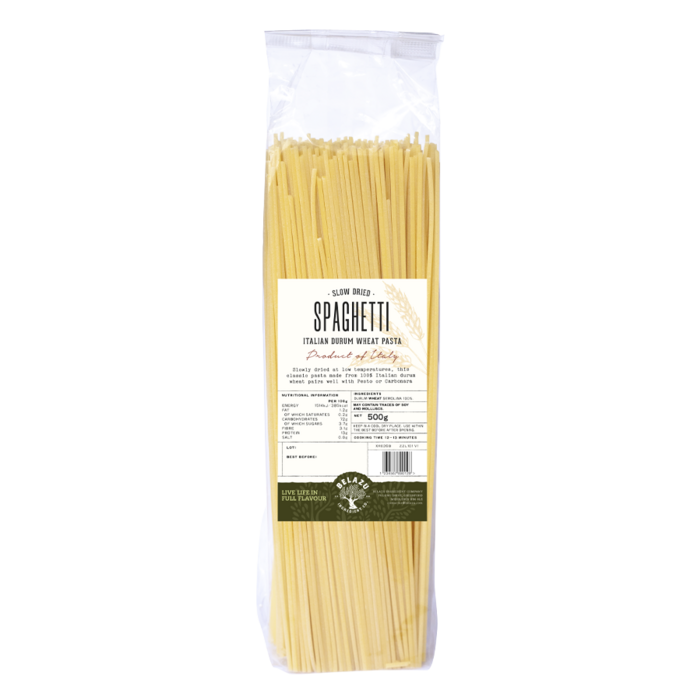

Dried Spaghetti Recipe

Delicious spaghetti!
This is as easy as it gets.
The ideal dish when you come back from home and don't wanna cook anything. Specially if you have italian blood running through your veins. It's probably some sauce, too.
Ingredients:
- Dried spaghetti.
- Water
- Some premade sauce, or anything you like!
Steps:
- Put the water in a pot. Wait til it boils.
- Once it boils, put the dried spaghetti in the water. NO! NO! DO NOT CUT THE SPAGHETTI!
- Wait about 12 minutes, once it is softer rinse it.
- Add the sauce and voilá! Tasty tasty spaghett!